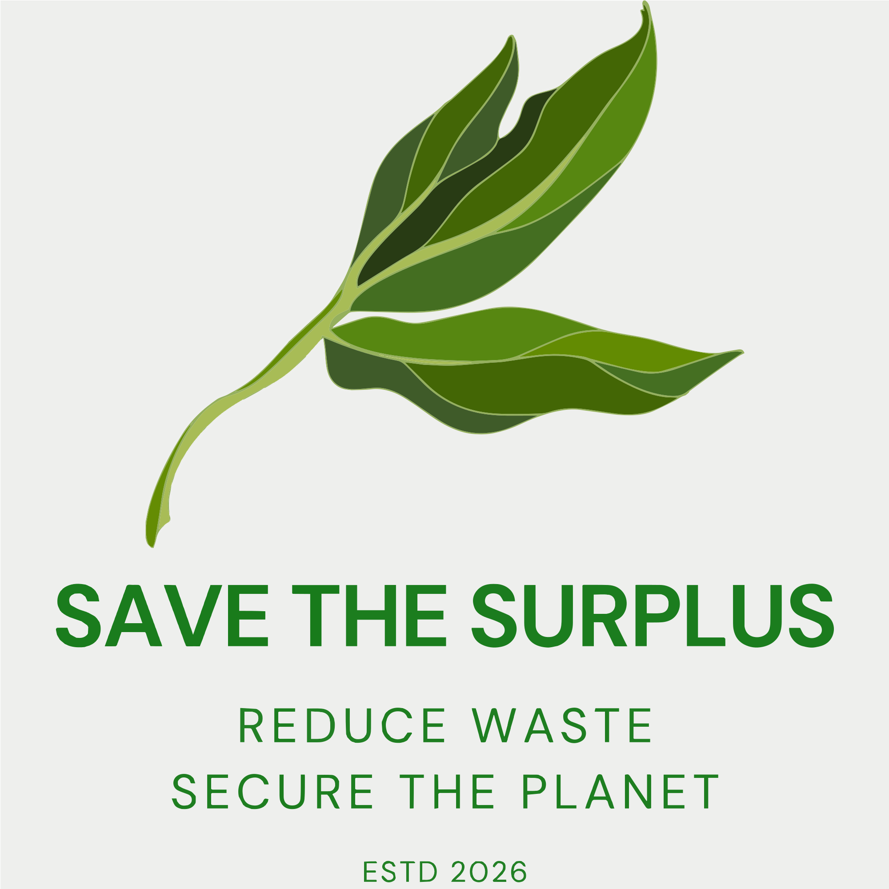

Welcome to Trash of the Week
Hello everyone, welcome to my Trash of the Week project (SAVE THE SURPLUS).
Below you can find links to the different sections of the website. You can also find an archive of old drafts and versions of the website in the Archive section.
I hope you enjoy exploring the site and learning about the various trash items that have made it to the spotlight each week!
Important Note: For some reason there seems to be an issue with uBlock within Microsoft Edge (a popular adblocker) that blocked CSS updates of my header and footer, so please disable those if it still appears blue. There are also some issues with subtitle for h1, so please use Chrome while accessing this page.